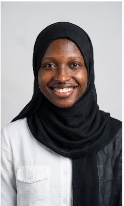

Statistique publique et développement
Mesurer pour orienter l'action publique : mon stage à l'ANSD m'a montré ce que des estimations fines changent pour un territoire.
Data Analyst et statisticienne, en Master 1 Économétrie, Statistiques à Aix-Marseille Université. Milo te guide dans mon univers.
Commencer la visite
Data Analyst et statisticienne de formation, je cherche un stage de 3 mois à partir de mai 2027.
Je sais collecter et nettoyer des données, les analyser avec des méthodes statistiques et économétriques, les modéliser, puis les restituer en dashboard et en recommandations claires.
Habituée à coordonner des équipes, j'aime le travail en équipe et le contact avec les personnes qui utilisent les résultats.
Quatre valeurs, que je retrouve dans tout ce que j'entreprends.
Je dis oui avant de me sentir prête, puis je me donne les moyens d'y arriver.
Je rends les résultats clairs pour ceux qui n'ont pas le jargon, et j'aide les plus jeunes à progresser.
Quand il me manque une compétence, je me forme : un nouvel outil n'est jamais un obstacle.
Je donne de mon temps aux collectifs que je dirige : le REBAR, la CFED, Ndajeem Ndimbaal.
Mes atouts : relier la rigueur statistique à la clarté de la restitution, me former vite sur ce qui manque, et coordonner une équipe vers un livrable.
Fais défiler : tu parcours mon profil comme sur LinkedIn.
Milo descend vers ce qui me fait avancer.
Ma force principale
Je l'exerce intentionnellement : avant de parler, je cherche ce qui compte pour la personne en face, puis je construis mon argument autour de cela.
La preuve. À la tête du REBAR, j'ai rassemblé les jeunes de Bargny autour d'activités éducatives et j'ai porté le projet auprès des autorités de la commune.
0 personnes convaincues sur 40, dans cette scène
Mon axe d'amélioration
Je travaille ma gestion du temps : savoir ce qui doit être fait maintenant, ce qui doit être planifié, et ce que je dois savoir lâcher.
Mon action concrète. Chaque lundi, je liste mes tâches de la semaine et je les classe avec deux questions : est-ce urgent, est-ce important ? Je bloque ensuite des créneaux dans mon agenda pour ce qui est important.
Je ne réponds pas de la même façon à un stress ponctuel et à un stress qui dure.
Stress ponctuel
Inspirer par le nez, souffler longuement : je ralentis avant de réagir.
Stress qui dure
Je prends du recul : la prière pour me recentrer, la mer pour me vider la tête.
Stress qui dure
Une tâche simple qui occupe l'esprit et fait retomber la tension.
Myriad, stage d'avril à septembre 2026. Projet de juin 2026, présenté sur place.
Fais défiler pour lire la suite.
Je suis Data Analyst. En juin 2026, lors de mon stage de fin de cycle chez Myriad, je travaille sur un projet pour le département support et ops : ses agents ont besoin d'un seul outil qui regroupe leurs sources d'information pour résoudre les incidents, avec des pistes de solution rapides.
Je conçois un assistant IA pour l'équipe support.
Enjeu : livrer une première version avant la date limite, accessible et utilisée fréquemment par les agents.
L'équipe l'utilise beaucoup et il lui fait gagner beaucoup de temps.
ANSD, août à octobre 2025. Estimation sur petits domaines, modèle de Fay-Herriot.
En août 2025, je suis stagiaire analyste statisticienne à l'ANSD, à la division de la méthodologie et de l'innovation.
Je pilote la mesure de la pauvreté multidimensionnelle au niveau départemental avec les méthodes SAE, plus précisément Fay-Herriot.
Enjeux : un temps restreint, une violation des hypothèses du modèle, et convaincre le jury.
Le jury m'attribue la meilleure note : 17/20.
Mesurer pour orienter l'action publique : mon stage à l'ANSD m'a montré ce que des estimations fines changent pour un territoire.
Des données massives et des décisions rapides. Deux personnes de mon réseau y travaillent, à la Sonatel et chez Mixx by YAS.
Des assistants et des tableaux de bord qui font gagner du temps aux équipes : c'est ce que j'ai construit chez Myriad.
Des personnes et des communautés qui m'ont orientée, conseillée ou ouvert des portes. Les coordonnées sont volontairement masquées.
| Contact | Lien avec moi | Organisation et rôle | Ce qu'il ou elle m'apporte | Coordonnées |
|---|---|---|---|---|
| Ibrahima Gueye | Cousin | Responsable à la Sonatel | Une porte d'entrée dans les télécoms. Je lui ai remis mon CV en août, sans suite pour l'instant : je prévois de le relancer. | +221 77 4•• •• •• |
| Réseau des alumni de l'ENSAE | Communauté | Anciens de l'ENSAE Dakar | Mises en relation et conseils de parcours : c'est par lui que j'ai rencontré Fatou et Doudou Malick Faye. | annuaire réservé aux membres |
| Réseau des analystes statisticiens du RESA | Communauté | Analystes statisticiens | Échanges entre pairs, retours d'expérience et veille sur le métier. | groupe privé |
| Mon ancien manager | Ancien manager | Data Engineer, Myriad | Regard technique sur mes projets, et une référence professionnelle. | +33 6 2• •• •• •• |
| Fatou | Alumni de l'ENSAE | Statisticienne, ANSD | M'a mise en relation avec M. Kamara pour mon stage sur la pauvreté multidimensionnelle. | +221 76 3•• •• •• |
| M. Kamara | Expert de mon sujet de stage | Chef de division, direction des statistiques sociales, ANSD | Expert de la pauvreté multidimensionnelle. M'a orientée vers le Dr Balde. | +221 77 6•• •• •• |
| Dr Balde | Enseignant | Directeur des études et des stages, ENSAE ; spécialiste des petits domaines | Une expertise de référence sur l'estimation sur petits domaines, au cœur de mon projet. | +221 78 1•• •• •• |
| Doudou Malick Faye | Alumni de l'ENSAE | Data scientist | Pour mon mémoire de 3e année, m'a orientée vers Mamadou Diop. | +221 70 5•• •• •• |
| Mamadou Diop | Ancien de l'ENSAE | Ingénieur statisticien économiste, Head of Steering and Performance, Mixx by YAS ; certifié monnaie digitale | A répondu à mes interrogations et à mes inquiétudes pour mon mémoire. | +221 77 9•• •• •• |
Trouver un stage en fin de M1.
Passer un test de niveau, avec B2 pour cible.
Trouver une alternance pour le M2.
Monter en compétences, avec un pipeline ETL complet à montrer.
Pour un stage, une alternance ou simplement échanger sur mes projets.
Les neuf éléments demandés dans le cours, avec la réponse en une ligne et le lien pour la retrouver.